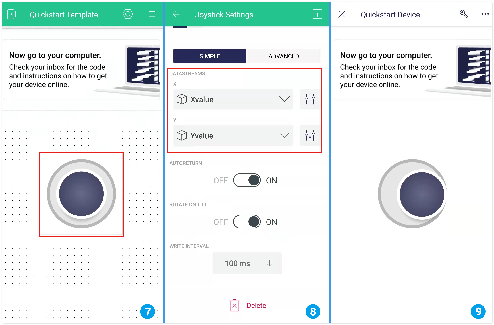

Bemerkung
Hallo und willkommen in der SunFounder Raspberry Pi & Arduino & ESP32 Enthusiasten-Gemeinschaft auf Facebook! Tauchen Sie tiefer ein in die Welt von Raspberry Pi, Arduino und ESP32 mit anderen Enthusiasten.
Warum beitreten?
Expertenunterstützung: Lösen Sie Nachverkaufsprobleme und technische Herausforderungen mit Hilfe unserer Gemeinschaft und unseres Teams.
Lernen & Teilen: Tauschen Sie Tipps und Anleitungen aus, um Ihre Fähigkeiten zu verbessern.
Exklusive Vorschauen: Erhalten Sie frühzeitigen Zugang zu neuen Produktankündigungen und exklusiven Einblicken.
Spezialrabatte: Genießen Sie exklusive Rabatte auf unsere neuesten Produkte.
Festliche Aktionen und Gewinnspiele: Nehmen Sie an Gewinnspielen und Feiertagsaktionen teil.
👉 Sind Sie bereit, mit uns zu erkunden und zu erschaffen? Klicken Sie auf [hier] und treten Sie heute bei!
Wie verwendet man Blynk auf dem Mobilgerät?
Bemerkung
Da Datenströme nur im Webinterface von Blynk erstellt werden können, müssen Sie sich auf verschiedene Projekte beziehen, um Datenströme im Web zu erstellen. Befolgen Sie dann das untenstehende Tutorial, um Widgets in der Blynk-App auf Ihrem Mobilgerät zu erstellen.
Öffnen Sie den Google Play Store oder den APP Store auf Ihrem Mobilgerät und suchen Sie nach „Blynk IoT“ (nicht Blynk(Legacy)), um die App herunterzuladen.
Melden Sie sich nach dem Start der App an. Dieses Konto sollte identisch mit dem Konto sein, das Sie im Web-Client verwenden.
Navigieren Sie zum Dashboard (falls Sie noch keines haben, erstellen Sie eines). Sie werden feststellen, dass die Dashboards für Mobilgeräte und Web unabhängig voneinander sind.

Klicken Sie auf das Bearbeiten-Symbol.
Tippen Sie auf einen leeren Bereich.
Wählen Sie das gleiche Widget aus, das Sie auch auf der Webseite verwendet haben, zum Beispiel ein Joystick-Widget.

Nun erscheint das Joystick-Widget im leeren Bereich. Klicken Sie darauf.
Die Einstellungen für den Joystick öffnen sich. Wählen Sie die Datenströme X-Wert und Y-Wert aus, die Sie gerade auf der Webseite festgelegt haben. Beachten Sie, dass jedes Widget einem anderen Datenstrom in jedem Projekt entspricht.
Kehren Sie zur Dashboard-Seite zurück. Jetzt können Sie den Joystick nach Belieben bedienen.
